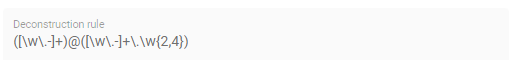

Characteristic
Characteristic attributes
Depending on the Characteristic class (i.e., Characteristics' classes and instances), different attributes are available. For the correct understanding of Characteristics, see Characteristics and Constraints (SAMM 2.1.0). In the following, handling Characteristics with the Aspect Model Editor will be explained.
Choose a Characteristic class
For a new Characteristic, first choose a Characteristic class value from the drop-down menu of the Characteristic class attribute in the Edit dialog.
→ This will auto-populate the Edit dialog with the corresponding attribute fields.
Data type attribute
SAMM allows two kinds of data types: simple types (scalars) and complex types (Entities).
-
For using a simple data type, populate the data type field with a value like
xsd:float,xsd:integerorxsd:string(no quotation marks, no spaces), see Data Types (SAMM 2.1.0).Make sure that you do not include a space character as they are not accepted. -
For using a complex data type, relate this Characteristic with an Entity, which will then be the data type of the Characteristic.
Enumeration Characteristics
An Enumeration Characteristic can have simple data types or complex data types.
Simple data types for Enumeration Characteristics
If your Characteristic is an Enumeration, provide the possible values as a space-separated list of strings, e.g., red yellow green.
See also Declaring Enumerations(SAMM 2.1.0).
If no data type is selected, string is selected as default for the values.
Structured Value Characteristics
Structured Value Characteristics allow to semantically describe formatted string-like values like a date, email, or product’s type part number. For example, for such type part numbers, the parts should be semantically described separately and the composition of those into one string should be described via a regular expression. For more background on Structured Values, see Structured Value(SAMM 2.1.0)
For Structured Value Characteristics, the following attributes have to be defined:
Deconstruction rule name |
A single choice for choosing a predefined rule or defining a custom rule. |
Deconstruction rule |
* If the * If anything else is selected, this attribute will be populated with a predefined rule and it is disabled. * For a piece of your regex to correspond with a property in  |
Elements |
Opens up a dialog containing a table with two columns. One column shows all the capture groups from the |

To edit a new Structured Value Characteristic, proceed as follows:
-
In the Edit dialog, choose the Characteristic class StructuredValue.
-
Enter values for the attributes Deconstruction rule name, Deconstruction rule, and Elements.
-
Click Save.
→ Now you can see the changes in editor.

To create a new element from such a Structured Value Characteristic, proceed as follows:
-
Click the Add icon on the Structured Value Characteristic shape.
→ As a result, a new Property is created.
A new Property created from a Structured Value Characteristic, is automatically inserted as an attribute in the Structured Value Characteristic and the (regex) capture group is automatically appended to deconstructionRule.
|
Unit as an attribute for Characteristics
As an attribute for Characteristics, a Unit can be optional or mandatory.
If your Characteristic is a Quantifiable (see Characteristics (SAMM 2.1.0)), Unit is an optional attribute (only exception for not having a Unit: unit-less countable Quantifiable).
For the Characteristic classes Duration and Measurement the Unit attribute is mandatory.
Entering a value to the Unit attribute field is done through a search:
-
Start typing the Unit you are searching for.
-
You may also use advanced search syntax (=metre, *metre, perSecond$) as explained in Search Elements.
-
Select your Unit from the drop-down menu of the Unit attribute.

For a complete list of supported Units refer to the Unit Catalog (SAMM 2.1.0).
Further explanations about using Units can be found in Characteristics (SAMM 2.1.0).
| Do not include space characters as they are not accepted. |